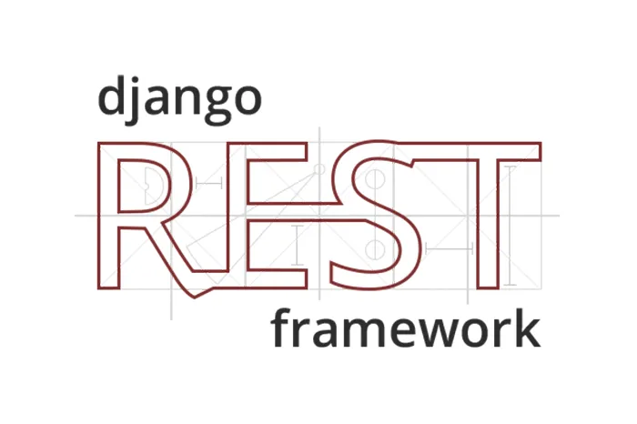
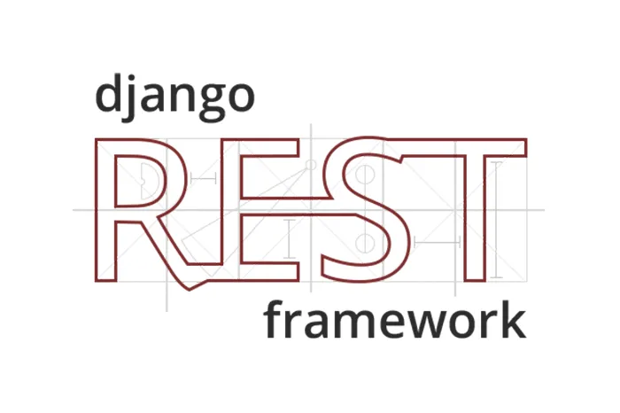
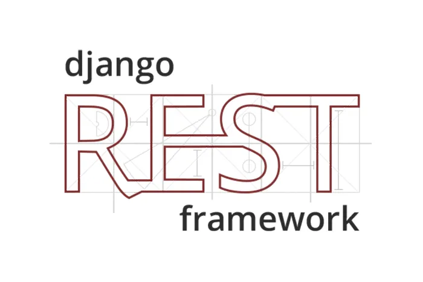
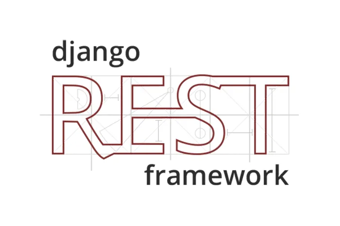

Hello there!
Jack DeVries
Web & Software Developer

My Toolbox
 

 

I was inspired by the design philosophy of vim to
create this minimal and efficient keyboard-driven tool to help
teachers provide grades and feedback for their google classroom
assignments.
The backend stack is PostgreSQL, Django, and Django REST Framework. I deployed the site to a machine running Ubuntu Server. The backend utilizes the Google Drive and Google Classroom APIs to fetch user data. I also used Python's difflib to implement a feature where teachers can view only the differences between the template they provide to students, and the actual student submission.
On the frontend of this project, I used Tailwind CSS and htmx to facilitate rapid prototyping, and minimize code repetition. This choice has also effectively me to inject UI with dynamic data into the browser extension from the backend, which has been pretty neat!
The Song Maker Gallery is a dynamic web application used by music teachers to present galleries of student compositions made in the Chrome Music Lab.
It currently has 606 active users, 622 galleries created, and over 24,000 student songs uploaded! It was built with Django, Django REST Framework, and MySQL on the backend, and React on the frontend, plus several additional frontend and backend libraries.
Visit the site and inspect the song thumbnails in your browser – they are all dynamically generated SVG on the frontend, with the backend serving representations of the song in the MIDI file format! This optimization significantly reduced the application’s bandwidth and storage needs.
In June, July, and August of 2021, I committed myself to contributing to Cpython full-time. Cpython is the reference implementation of the Python programming language, and it contains the Python interpreter, standard library, and official documentation.
Many of my contributions were towards documentation, the most
significant of which was my rewrite of the new documentation for
__main__.
Eventually, I became more familiar with the huge Cpython codebase,
and I am extremely proud to say that my code contributions were
eventually merged into Python's standard libraries
rlcompleter, tarfile, and
argparse. I also wrote a patch in C,
which became part of the implementation of the new
structural pattern matching feature
in Python 3.10.
I have been teaching myself to develop software for over two years now. The projects in the previous section are my best and brightest, but there are a myriad of other smaller projects in my portfolio that I have created along my learning journey.
rn using only the
Python Standard Library (view on GitHub)
Two years ago, my journey towards software development began. Once I started learning to write code and I saw the potential of what I could create, my interest and commitment to learning more never stopped. Considering my background as a professional educator, the only thing about this experience that hasn't surprised me was my passion and dedication towards mastering this new craft.
What I know for sure is that my interest in software development has truly swept me away, and it's become hard for me to spend my time doing anything else. I am ready to take my passion and curiosity to the next level.
Although I am new to the business, I have already spent a lot of time working on software projects big and small. I know how to navigate large codebases and make meaningful contributions to them. I have also learned how to push projects forward and organize my work as a developer. I understand the importance of agility and good development practices, and I have a great understanding of the tools that I know – not just languages and libraries, but my broader development workflow.
Overall, I am applying because I feel ready, and I hope that we can meet soon so that I can show you that I am.